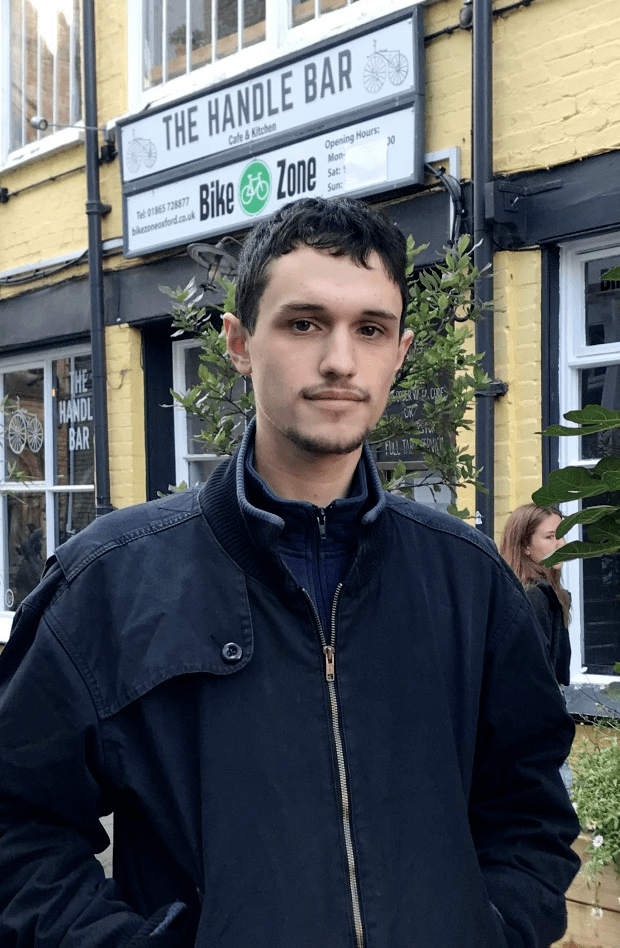

Sam Fisher

About
I am a third year DPhil student at the University of Oxford working under the supervision of Dawid Kielak. I completed my undergraduate and master's degrees at McGill University. My master's thesis was supervised by Dani Wise.
Research interests
I am interested in geometric group theory and, more specifically, finiteness properties of groups, (algebraic) fibring, \(\ell^2\)-invariants and their generalisations in positive characteristic, and group algebras.
Preprints
- Improved algebraic fibrings, submitted. arXiv
- Algebraic fibring of a hyperbolic \(7\)-manifold, Bull. Lond. Math. Soc. Published version (open access) arXiv
- Homological growth of Artin kernels in positive characteristic (with Sam Hughes and Ian J. Leary). arXiv
Invited talks
- "Analogues of \(\ell^2\)-Betti numbers in positive characteristic and homology growth," ICMAT group theory seminar (January 2023)
- "\(\ell^2\)-Betti numbers and algebraic fibring," ICMAT group theory seminar (January 2023)
- "Agrarian invariants and a positive characteristic version of Lück's approximation conjecture," Southampton Pure maths lunchtime seminar (November 2022)
- "Algebraic fibring and \(\ell^2\)-Betti numbers," KIT AG Topology seminar (November 2022)
Contact
- sam.fisher [at] maths.ox.ac.uk
- Office N3.10
- Mathematical Institute
- University of Oxford